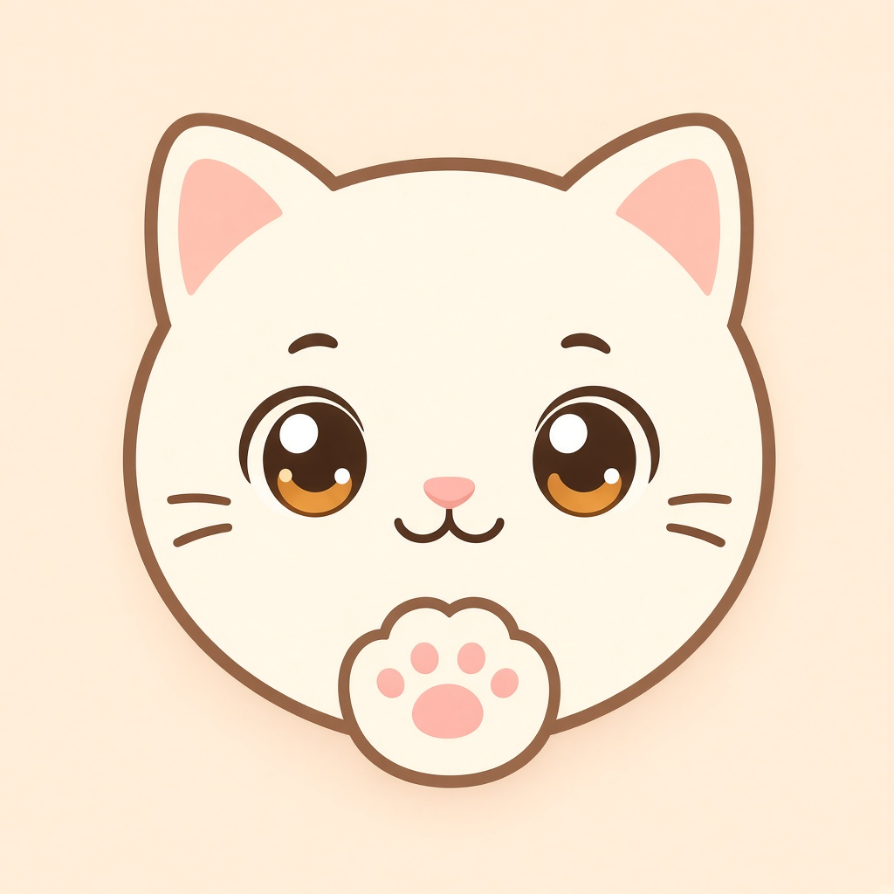

We build clever apps.
TJDAX is an engineering company. We solve problems with technology, and we use AI to propose better solutions.
We create inventive Android apps, free web apps, and programs that make everyday life a little easier. CatCut is our free video editor for Windows.
What we do
We deliver software systems, publish Android apps, ship free tools that run in the browser, and offer CatCut as a free Windows video editor.
We also take part in AI governance: a public effort to prevent the abuse and misuse of AI, and to protect human dignity.
Solutions
Security, traffic, VPN, ETL, data, monitoring, cloud cost, websites, WeChat mini programs, API connections, and CatCut.
Browse all solutionsAndroid apps
Apps we design, publish on Google Play, and keep updated after release.
Browse all appsWeb apps
Games and tools that open in the browser. Nothing to install, and nothing is uploaded.
Open web appsAI governance
A public effort against AI abuse and misuse, so human dignity stays intact. The AI use check is one part of that work.
Take the AI use checkCatCut
Free video editor for Windows. Open source, and the edit stays on your computer.
Read about CatCutSolutions
Security, traffic, VPN, ETL, monitoring, websites, and connections we can build around them. CatCut, the free Windows video editor, is on this list too.
Browse all solutionsOur apps
A growing shelf of inventive Android apps, each built to solve a real everyday problem. EntityRadar is the newest: an offline radar for the phone's magnetic field, signal, and sound, now on Google Play. Nothing is uploaded. UnitSlide converts cups, oven temperature, tape-measure inches, and miles by sliding a ruler. No typing, and it works offline.
Browse all appsWeb apps
Free games and handy tools that run right in your browser. Nothing to install, and your data never leaves your device.
Open web appsCatCut
Free video editor for Windows. Cut on a timeline, mix the sound, and export AV1 or H.264 on your own PC. The source is free under the Apache License 2.0.
Read about CatCut
About
TJDAX is a software development company of engineers. We solve problems with technology, and we use AI with that engineering to propose better solutions. We create clever, original apps and programs that help people and make a positive difference in society.
Contact
For business or support: